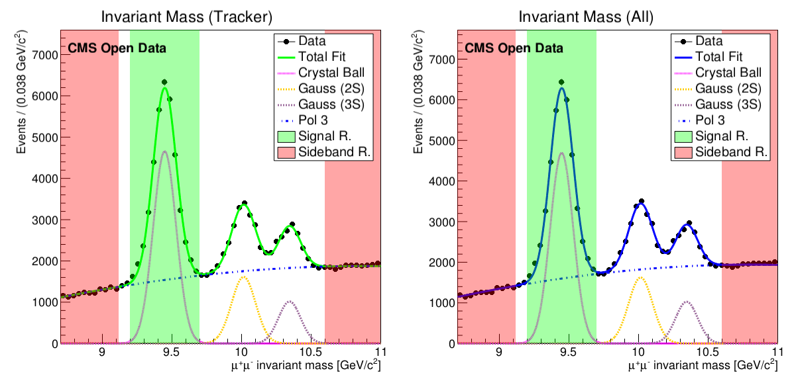

Sideband Subtraction
Signal extraction: sideband subtraction method¶
The reconstruction efficiency is calculated using only signal muons. In order to measure the efficiency, we need a way to extract signal from the dataset. You've used the fitting method and now you'll meet the sideband subtraction method.
This method consists in choosing sideband and signal regions in invariant mass distribution. The sideband regions (shaded in red in the figure) have background particles and the signal region (shared in green in the figure) has background and signal particles.

Note
The background corresponds to candidates that do not correspond to the decay of a genuine resonance; for example, the pair is formed by the tag muon associated to an uncorrelated track produced elsewhere in the collision; the corresponding invariant mass has thus a smooth continuous shape, that is extrapolated from the signal regions into the sideband region.
Note
We choose only the ϒ (1S) signal for selecting the signal region; simulation information is further available for this resonance, allowing in the end for a comparison of results, between data and simulation.
For each event category (i.e. Pass and All), and for a given variable of interest (e.g., the probe pT), two distributions are obtained, one for each region (Signal and Sideband). In order to obtain the variable distribution for the signal only, we proceed by subtracting the Background distribution (Sideband region) from the Signal+Background one (Signal region):

Where the normalization α factor quantifies the quantity of background present in the signal region>
And for the uncertainty:

Applying those equations we get histograms like this:

- Solid blue line (Total) = particles in signal region;
- Dashed blue line (Background) = particles in sideband regions;
- Solid magenta line (signal) = signal histogram (background subtracted).
You will see this histogram on this exercise.
About this code
More info about this code can be found here.
Preparing files¶
First, from the root folder of our downloades repository, we need to go sideband subtraction method tutorial:
cd efficiency_tools/sideband_subtraction
To copy the ϒ dataset from real data file to your machine (requires 441 MB), type:
wget --load-cookies /tmp/cookies.txt "https://docs.google.com/uc?export=download&confirm=$(wget --quiet --save-cookies /tmp/cookies.txt --keep-session-cookies --no-check-certificate 'https://docs.google.com/uc?export=download&id=1Fj-rrKts8jSSMdwvOnvux68ydZcKB521' -O- | sed -rn 's/.*confirm=([0-9A-Za-z_]+).*/\1\n/p')&id=1Fj-rrKts8jSSMdwvOnvux68ydZcKB521" -O Run2011A_MuOnia_Upsilon.root && rm -rf /tmp/cookies.txt
This code downloads the file directly from Google Drive.
Run this code to download the simulation ntuple for ϒ (requires 66 MB):
wget --load-cookies /tmp/cookies.txt "https://docs.google.com/uc?export=download&confirm=$(wget --quiet --save-cookies /tmp/cookies.txt --keep-session-cookies --no-check-certificate 'https://docs.google.com/uc?export=download&id=1ZzAOOLCKmCz0Q6pVi3AAiYFGKEpP2efM' -O- | sed -rn 's/.*confirm=([0-9A-Za-z_]+).*/\1\n/p')&id=1ZzAOOLCKmCz0Q6pVi3AAiYFGKEpP2efM" -O Upsilon1SToMuMu_MC_full.root && rm -rf /tmp/cookies.txt
Now, check if everything is ok:
ls
main README.md Run2011A_MuOnia_Upsilon.root Upsilon1SToMuMu_MC_full.root
Your efficiency_tagandprobe folder should have these files:

Preparing code for Data¶
Note
I will teach you to manage the files on the terminal, but you can use a graphical file explorer.
We need to edit some settings. Open settings.cpp:
cd main/config
ls
cuts.h settings.cpp
There are different ways to open this file. You can try to run:
gedit settings.cpp
Or, if you can not use gedit, try nano:
nano settings.cpp
I do not have nano!
You can try to use any text editor, but here is some commands you cant try to use to install it:
- Ubuntu/Debian:
sudo apt-get -y install nano. - RedHat/CentOS/Fedora:
sudo yum install nano. - Mac OS X:
nano is installed by default.
We want to calculate efficiencies of tracker muons. With the settings.cpp file opened, make sure to let the variables like this:
//Canvas drawing
bool shouldDrawInvariantMassCanvas = true;
bool shouldDrawInvariantMassCanvasRegion = true;
bool shouldDrawQuantitiesCanvas = true;
bool shouldDrawEfficiencyCanvas = true;
//Muon id analyse
bool doTracker = true;
bool doStandalone = false;
bool doGlobal = false;
We want to calculate the efficiency using specific files that we downloaded. They name are Run2011A_MuOnia_Upsilon.root and Upsilon1SToMuMu_MC_full.root and are listed in const char *files[]. While settings.cpp is open, try to use the variable int useFile to run Run2011A_MuOnia_Upsilon.root.
How to do this
Make sure useFile is correct:
//List of files
const char *files[] = {"../data_histoall.root",
"../Run2011AMuOnia_mergeNtuple.root",""
"../JPsiToMuMu_mergeMCNtuple.root",
"../Run2011A_MuOnia_Upsilon.root",
"../Upsilon1SToMuMu_MC_full.root"};
const char* directoriesToSave[] = {"../results/result/",
"../results/Jpsi Run 2011/",
"../results/Jpsi MC 2020/",
"../results/Upsilon Run 2011/",
"../results/Upsilon MC 2020/"};
//MAIN OPTIONS
//Which file of files (variable above) should use
int useFile = 3;
It will tell which configuration the program will use. So, the macro will run with the ntuple in files[useFile] and the results will be stored in directoriesToSave[useFile].
the first three files won't be used in this execise.
About code
Normally we need to set the variables bool isMC and const char* resonance, but at this time it is already done and set automatically for these ntuples' names.
Editting bins¶
The code allows to define the binning of the kinematic variable, to ensure each bin is sufficiently populated, for increased robustness. To change the binning, locate PassingFailing.h
cd ../classes
ls
FitFunctions.h MassValues.h PtEtaPhi.h TagProbe.h
InvariantMass.h PassingFailing.h SidebandSubtraction.h Type.h
And then Open PassingFailing.h
gedit PassingFailing.h
Search for the createEfficiencyPlot(...) function. You'll find something like this:
void createHistogram(TH1D* &histo, const char* histoName)
{...}
For each quantity (pT, eta, phi) we used different bins. To change the bins, look inside the createEfficiencyPlot(...) function. In a simpler version, you'll see a structure like this:
//Variable bin for pT
if (strcmp(quantityName, "Pt") == 0)
{
//Here creates histogram for pT
}
//Variable bin for eta
else if (strcmp(quantityName, "Eta") == 0)
{
//Here creates histogram for eta
}
//Bins for phi
else
{
//Here creates histogram for phi
}
See the whole scructure
Don't be scared! Code does'nt bite.
//Variable bin for pT
if (strcmp(quantityName, "Pt") == 0)
{
double xbins[] = {0., 2.0, 3.4, 4.0, 4.4, 4.7, 5.0, 5.6, 5.8, 6.0, 6.2, 6.4, 6.6, 6.8, 7.3, 9.5, 13.0, 17.0, 40.};
int nbins = sizeof(xbins)/sizeof(*xbins) - 1;
histo = new TH1D(hName.data(), hTitle.data(), nbins, xbins);
}
//Variable bin for eta
else if (strcmp(quantityName, "Eta") == 0)
{
double xbins[] = {-2.4, -1.8, -1.4, -1.2, -1.0, -0.8, -0.5, -0.2, 0, 0.2, 0.5, 0.8, 1.0, 1.2, 1.4, 1.8, 2.4};
int nbins = sizeof(xbins)/sizeof(*xbins) - 1;
histo = new TH1D(hName.data(), hTitle.data(), nbins, xbins);
}
//Bins for phi
else
{
double xbins[] = {-3.0, -1.8, -1.6, -1.2, -1.0, -0.7, -0.4, -0.2, 0, 0.2, 0.4, 0.7, 1.0, 1.2, 1.6, 1.8, 3.0};
int nbins = sizeof(xbins)/sizeof(*xbins) - 1;
histo = new TH1D(hName.data(), hTitle.data(), nbins, xbins);
}
//Edit histogram axis
histo->GetYaxis()->SetTitle(Form(yAxisTitleForm.data(), histo->GetBinWidth(0)));
histo->GetXaxis()->SetTitle(xAxisTitle.data());
The code that creates the histogram bins is located inside the conditionals and is commented. You can edit this code and uncomment to create histogram bins however you want. Instead of using a function to generate the bins, we can also define them manually.
As we intend to compare the results between data and simulation, but also between the sideband and fitting methods. You are advised to employ the same bin choice. Garantee your the code uses same bin as the previus this:
//Variable bin for pT
if (strcmp(quantityName, "Pt") == 0)
{
double xbins[] = {0., 2.0, 3.4, 4.0, 4.4, 4.7, 5.0, 5.6, 5.8, 6.0, 6.2, 6.4, 6.6, 6.8, 7.3, 9.5, 13.0, 17.0, 40.};
int nbins = sizeof(xbins)/sizeof(*xbins) - 1;
histo = new TH1D(hName.data(), hTitle.data(), nbins, xbins);
}
//Variable bin for eta
else if (strcmp(quantityName, "Eta") == 0)
{
double xbins[] = {-2.4, -1.8, -1.4, -1.2, -1.0, -0.8, -0.5, -0.2, 0, 0.2, 0.5, 0.8, 1.0, 1.2, 1.4, 1.8, 2.4};
int nbins = sizeof(xbins)/sizeof(*xbins) - 1;
histo = new TH1D(hName.data(), hTitle.data(), nbins, xbins);
}
//Bins for phi
else
{
double xbins[] = {-3.0, -1.8, -1.6, -1.2, -1.0, -0.7, -0.4, -0.2, 0, 0.2, 0.4, 0.7, 1.0, 1.2, 1.6, 1.8, 3.0};
int nbins = sizeof(xbins)/sizeof(*xbins) - 1;
histo = new TH1D(hName.data(), hTitle.data(), nbins, xbins);
}
Running the code¶
After setting the configurations, it's time to run the code. Go back to the main directory and make sure macro.cpp is there.
cd ..
ls
classes compare_efficiency.cpp config macro.cpp
Run the macro.cpp:
root -l -b -q macro.cpp
"../results/Upsilon Run 2011/" directory created OK
Using "../Run2011A_MuOnia_Upsilon.root" ntuple
resonance: Upsilon
Using method 2
Data analysed = 986100 of 986100
In this process, more informations will be printed in terminal while plots will be created on specified (these plots are been saved in a folder). The message below tells you that code has finished running:
Done. All result files can be found at "../results/Upsilon_Run_2011/"
Common errors
If you run the code and your terminal printed some erros like:
Error in <ROOT::Math::Cephes::incbi : Wrong domain for parameter b (must be 0)
This occurs when the contents of a bin of the pass histogram is greater than the corresponding bin in the total histogram. With sideband subtraction, depending on bins you choose, this can happen and will result in enormous error bars.
This issue may be avoided by fine-tuning the binning choice. For now, these messages may be ignored.
Probe Efficiency results for Data¶
If all went well, your results are going to be like these:


Preparing and running the code for simulation¶
Challenge
Try to run the same code on the Upsilon1SToMuMu_MC_full.root file we downloaded.
Tip
You will need the redo the steps above, setting:
int useFile = 4;
in main/config/settings.cpp file.
Comparison between real data and simulation
We'll do this in the last section of this exercise. So the challenge above is mandatory.
Extra challenge
If you are looking for an extra exercise, you can try to apply the same logic, changing some variables you saw, in order to get results for the J/ψ nutpple.
To download the J/ψ real data ntupple (requires 3.3 GB):
wget --load-cookies /tmp/cookies.txt "https://docs.google.com/uc?export=download&confirm=$(wget --quiet --save-cookies /tmp/cookies.txt --keep-session-cookies --no-check-certificate 'https://docs.google.com/uc?export=download&id=16OqVrHIB4wn_5X8GEZ3NxnAycZ2ItemZ' -O- | sed -rn 's/.*confirm=([0-9A-Za-z_]+).*/\1\n/p')&id=16OqVrHIB4wn_5X8GEZ3NxnAycZ2ItemZ" -O Run2011AMuOnia_mergeNtuple.root && rm -rf /tmp/cookies.txt
To download the J/ψ simulated data ntuple (requires 515 MB):
wget --load-cookies /tmp/cookies.txt "https://docs.google.com/uc?export=download&confirm=$(wget --quiet --save-cookies /tmp/cookies.txt --keep-session-cookies --no-check-certificate 'https://docs.google.com/uc?export=download&id=1dKLJ5RIGrBp5aIJrvOQw5lWLQSHUgEnf' -O- | sed -rn 's/.*confirm=([0-9A-Za-z_]+).*/\1\n/p')&id=1dKLJ5RIGrBp5aIJrvOQw5lWLQSHUgEnf" -O JPsiToMuMu_mergeMCNtuple.root && rm -rf /tmp/cookies.txt
As this dataset is larger, the code will run slowly. It can take several minutes to be completed depending where the code is been running